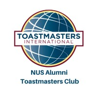

Your quick guide to reserving meeting slots, fulfilling Pathways level requirements, and accessing official Toastmasters learning resources.
No password needed. All slots are first-come, first-served and lock immediately upon reservation.
Select your month on ToastFlow. Live slot availability updates in real time for speeches and functionary roles.
Click Reserve a Speech (Slots 1–4) or click Take role (Timer, Ah-Counter, Evaluator, etc.).
Type your name and select your Pathway & Project. Speech objectives and timings load automatically.
Click Reserve. Your slot locks immediately. VP Education reviews and confirms it for the Program Sheet.
Each Pathways level requires completing speech projects, meeting roles, and educational series presentations.
* An introductory mentor is an experienced member who unofficially supports newer members. The official Pathways Mentor Program opens on Base Camp once Level 2 is completed.
** Specialized roles fit club-specific needs — e.g. Online Meeting Host, or managing presentation technology.
In Toastmasters, your growth starts on stage with your first speech project. Follow the Pathways learning journey below, paired directly with official resources.
Your journey starts here: Across all 11 Pathways tracks, your very first milestone is the Ice Breaker (4–6 minutes). You introduce yourself to fellow club members, share your background, passions, or personal milestones. Focus on connection and authenticity rather than technical perfection.
Preparation & Meeting Agenda: Log into Base Camp, select your Path, and review the Ice Breaker project guide. Before meeting day, review the monthly Program Sheet agenda, arrive 15 minutes early, and connect with your Toastmaster of the Evening and assigned Evaluator.
Choose your Path, launch your Ice Breaker project tutorial, and download the evaluation sheet.
Log in to Base Camp ↗ Official Ice Breaker Guide ↗The heart of Toastmasters: In Level 1 Project 2 (Evaluation and Feedback), you deliver a speech, receive verbal and written evaluation, apply that feedback to deliver a second speech, and serve as an Evaluator for another speaker.
The CRC Method: When delivering verbal evaluations (2–3 minutes), practice the CRC technique: Commend specific strengths, Recommend 1–2 practical improvements, and Commend overall potential.
Download official 3-page evaluation criteria forms and scoring rubrics for all speech projects.
Browse Evaluation Forms ↗Table Topics (Impromptu Speaking): Give a 1- to 2-minute impromptu speech on an unannounced prompt. Sharpens fast thinking, mental structure (e.g. PREP: Point, Reason, Example, Point), and poise under pressure.
Meeting Functionary Roles: Fulfill Level 1 role requirements to practice active listening and time management: serve as Timer (meeting pacing and timing signals), Ah-Counter (filler words and hesitation sounds), or Grammarian (word of the day & language excellence).
Official role descriptions, duties, and downloadable scripts for each meeting role.
View Official Role Scripts ↗ Table Topics Guide ↗Completing Level 1: Finish your remaining Level 1 projects (Writing a Speech with Purpose and Introduction to Vocal Variety and Body Language, 5–7 minutes each). Submit your Level 1 completion on Base Camp for VP Education verification.
Advancing to Level 2: Step into Level 2: Learning Your Style. Here you explore your personal communication and leadership style, take on advanced meeting roles (Toastmaster of the Evening, Topicsmaster), and begin mentoring newer members.
Comprehensive competencies and elective projects across all 5 Pathways levels.
Download 11 Paths Catalog (PDF) →Check open slots for the upcoming chapter meeting and reserve your role.
Go to Meeting Planner →